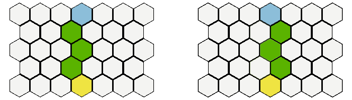

In this Example we want to create a simple vision system. If we click on a tile we want to highlight all those tiles which are visible. There will be 2 rules:
1) there is a limited vision range
2) certain tiles block vision to anything behind them
To decide which tiles are visible we are going to use the following approach: We draw a ring around the center tile and then draw lines to each tile of the ring, stopping each line after it hit a vision blocker. Every tile which at least one line reaches is considered visible. As we use the ring just as a helper to create the lines we want to also get those ring tiles which are out of the map bounds, so we will use HexGrid.GetTiles.Ring which does operate on the infinite plane.
Before we continue we need to talk a bit about symmetry. If you take a look at that picture:

you can see that sometimes there are 2 equally valid solutions to draw a line from A to B. Therefore we get more consistent results if we use both possible lines to determine our vision. The GetLines method has a parameter which allows us to nudge the origin position a tiny bit to the left or right which results in getting either the more "left" or the more "right" line. This also works for all diagonal lines.
We once again create the variables we need:
[SerializeField] private int mapRadius = 11;
[SerializeField] private GameObject tilePrefab = null;
[SerializeField] private GameObject tileVisionMarker = null;
[SerializeField] private GameObject edgeVisionBorder = null;
[SerializeField] private List<Material> materials = null;
private HexMap<int> hexMap;
private HexMouse hexMouse = null;
private GameObject[] tileObjects;
private List<GameObject> visionMarkers;
Next step is one again creating the map and initializing mouse and camera. We now put map initialisation in its own method.
void Start ()
{
hexMap = new HexMap<int>(HexMapBuilder.CreateHexagonalShapedMap(mapRadius), null);
hexMouse = gameObject.AddComponent<HexMouse>();
hexMouse.Init(hexMap);
InitMap();
SetupCamera();
}
void InitMap()
{
tileObjects = new GameObject[hexMap.TilesByPosition.Count];
visionMarkers = new List<GameObject>();
foreach (var tile in hexMap.Tiles)
{
tile.Data = (Random.Range(0, 4));
GameObject instance = GameObject.Instantiate(tilePrefab);
instance.GetComponent<Renderer>().material = materials[tile.Data];
instance.name = "MapTile_" + tile.Position;
instance.transform.position = tile.CartesianPosition;
tileObjects[tile.Index] = instance;
}
}
Now we add our method which calculates the visible tiles:
private HashSet<Vector3Int> CalculateVisibleTiles(Vector3Int origin, int range)
{
List<Vector3Int> ringTiles = HexGrid.GetTiles.Ring(origin, range, 1);
HashSet<Vector3Int> reachedTiles = new HashSet<Vector3Int>();
foreach(var ringTile in ringTiles)
{
List<Tile<int>> lineA = hexMap.GetTiles.Line(origin, ringTile, true, +0.001f);
List<Tile<int>> lineB = hexMap.GetTiles.Line(origin, ringTile, true, -0.001f);
List<List<Tile<int>>> lines = new List<List<Tile<int>>> { lineA, lineB};
foreach(var line in lines)
{
for (int i = 0; i < line.Count; i++)
{
reachedTiles.Add(line[i].Position);
if (line[i].Data == 0) break;
}
}
}
return reachedTiles;
}
And another method with which we visualise the result:
private void UpdateVisionMarkers(IEnumerable<Vector3Int> visibleTiles)
{
foreach(GameObject g in visionMarkers)
{
Destroy(g);
}
visionMarkers.Clear();
foreach(var tilePos in visibleTiles)
{
GameObject tileObj = Instantiate(tileVisionMarker, HexConverter.TileCoordToCartesianCoord(tilePos,0.1f), Quaternion.identity);
visionMarkers.Add(tileObj);
}
List<Vector3Int> borderEdges = hexMap.GetEdgePositions.TileBorders(visibleTiles);
foreach(var edgePos in borderEdges)
{
EdgeAlignment orientation = HexUtility.GetEdgeAlignment(edgePos);
float angle = HexUtility.anglebyEdgeAlignment[orientation];
GameObject edgeObj = Instantiate(edgeVisionBorder, HexConverter.EdgeCoordToCartesianCoord(edgePos), Quaternion.Euler(0, angle, 0));
visionMarkers.Add(edgeObj);
}
}
Finally we create the update method:
void Update ()
{
if (!hexMouse.CursorIsOnMap) return;
Vector3Int mouseTilePosition = hexMouse.TileCoord;
if (Input.GetMouseButtonDown(0))
{
var visibleTiles = CalculateVisibleTiles(mouseTilePosition, 5);
UpdateVisionMarkers(visibleTiles);
}
}